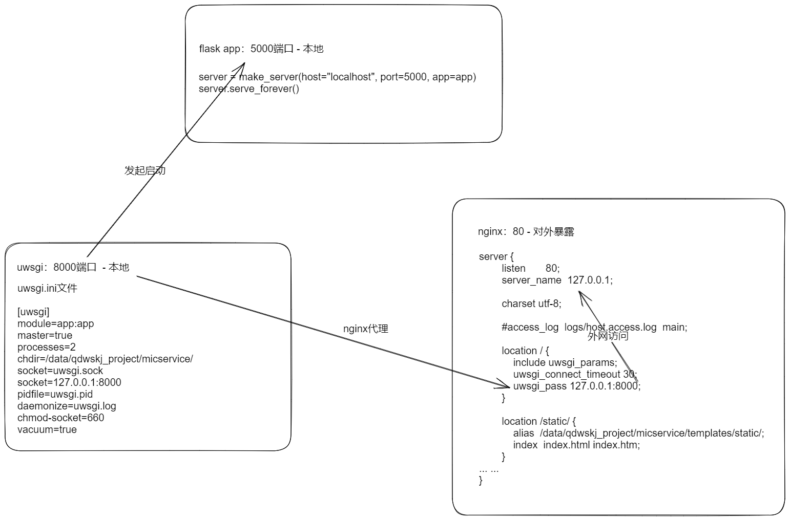
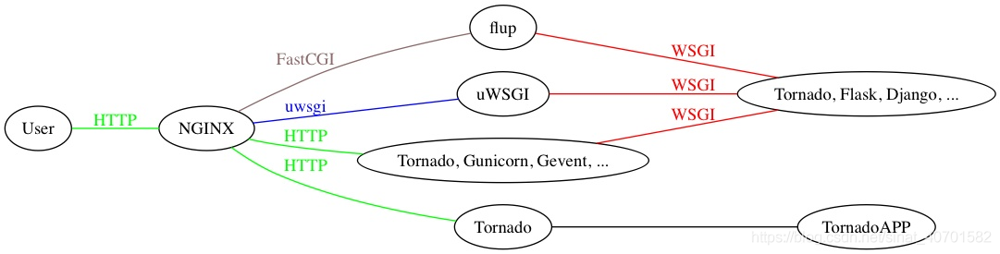

nginx+uwsgi+django项目部署¶
● 虚拟机部署：https://docs.qq.com/doc/DWHhFTGpyQ09xZkdo
● 部署参考文章：
1. https://cloud.tencent.com/developer/article/1877954
2. https://blog.csdn.net/qq_32656561/article/details/107781823
3. https://blog.csdn.net/weixin_44685869/article/details/103949664
1.配置过程问题¶
1\ vim编写wsgi.py路径不正确、项目路径不正确；=>查看日志会提示;
2\ django静态文件聚集（系统重启可能会丢失，需要重新聚集再运行uwsgi+nginx）;
3\ 生成验证码的pillow包，字体文件不支持相对路径，要改为绝对路径寻找字体文件才能正常显示;
2.安装ifconfig/vim/wget工具¶
yum -y install net-tools.x86_64 vim wget
3.安装python3及依赖包¶
# opt目录下载(linux我们采用源码安装),解压到/usr/local/src/
wget https://www.python.org/ftp/python/3.9.12/Python-3.9.12.tgz
cd /opt
tar -xzvf /opt/Python-3.9.12.tgz -C /usr/local/src/
# 安装Python依赖包
yum -y install zlib-devel bzip2-devel openssl-devel ncurses-devel sqlite-devel readline-devel tk-devel gcc make
# 系统更新
yum -y update
● 源码方式安装python-检查当前环境是都满足条件使用./configure
cd /usr/local/
tar -xzvf python-3.9.12.tar.gz
cd ~/Python-3.9.12
./configure --prefix=/usr/local/python3
make && make install
● 环境变量配置
# 添加用户级环境变量 profile.d--好维护，不再需要配置的环境变量直接删除.sh文件即可。
vim /etc/profile.d/python3.sh
# 写入内容保存
export PATH=$PATH:/usr/local/python3/bin
# 重载环境变量文件
source /etc/profile
# 查看当前环境变量是否存在
echo $PATH
默认.bashrc文件环境变量
# .bashrc
# User specific aliases and functions
alias rm='rm -i'
alias cp='cp -i'
alias mv='mv -i'
# Source global definitions
if [ -f /etc/bashrc ]; then
. /etc/bashrc
fi
export NSS_STRICT_NOFORK=DISABLED
● 更改pypi源为清华镜像源
python3 -m pip install --upgrade pip
pip3 config set global.index-url https://pypi.tuna.tsinghua.edu.cn/simple
● 关于linux环境变量的设置文章：https://blog.csdn.net/f110300641/article/details/82663132
4.安装git（本地上传可以用sftp root@ip + 密码=> put / get）¶
yum -y install git
5.安装项目依赖包¶
导出依赖包列表：
方式一：导出环境全部包
pip3 freeze > requirement.txt
方式二：导出环境项目依赖包
pip3 install pipreqs
pipreqs ./ --encoding=utf-8
# 安装全部包
pip3 install -r requirements.txt
● 报错问题：
django.core.exceptions.ImproperlyConfigured: Error loading MySQLdb module. Did you install mysqlclient?
● 解决方法：
pip3 install pymysql
项目（settings.py同级)目录中__init__.py中添加
import pymysql
pymysql.install_as_MySQLdb()
6.配置前运行测试¶
cd ... (进入项目目录)
python3 manage.py runserver 192.168.127.145:80

启动成功！没有问题，继续下面；
7.安装及配置uWSGI¶
● 安装uWSGI¶
python3 -m pip install --upgrade pip setuptools uwsgi
● uWSGI启动服务测试（项目目录执行）¶
uwsgi --http :80 --wsgi-file Django_Stdy02_EMS/wsgi.py
# 或者 uwsgi --http :80 --module Django_Stdy02_EMS.wsgi:application
● 编写uwsgi.ini配置文件¶
1. django配置uwsgi.ini¶
vim /opt/Django_Stdy02_EMS/uwsgi.ini
[uwsgi]
chdir=/opt/Django_Stdy02_EMS/
module=Django_Stdy02_EMS.wsgi:application
socket=127.0.0.1:8000
pidfile=uwsgi.pid
daemonize=uwsgi.log
chmod-socket=660
master=true
vacuum=true
thunder-lock=true
enable-threads=true
harakiri=30
post-buffering=4096
processes=2
threads=2
2. flask配置uwsgi.ini¶
[uwsgi]
;运行入口，py文件名:app名称
module=app:app
master=true
;进程数
processes=2
;运行目录
chdir=/data/qdwskj_project/micservice/
socket=uwsgi.sock
socket=127.0.0.1:8000
;进程pid文件
pidfile=uwsgi.pid
;日志文件
daemonize=uwsgi.log
chmod-socket=660
vacuum=true
● 启动uWSGI测试（uwsgi.init目录执行）¶
# 关闭uwsgi所有进程
pkill -f uwsgi -9
# 启动
uwsgi --ini uwsgi.ini
# 查看进程
ps -ef|grep -i uwsgi
# 重启
uwsgi --reload uwsgi.pid
# 关闭
uwsgi --stop uwsgi.pid
#目录会生成文件
uwsgi.ini
uwsgi.log
uwsgi.pid
8.安装及配置Nginx¶
yum源安装nginx（推荐）
# 查看是否存在nginx
rpm -qa | grep nginx
# 删除nginx包（强制模式）
rpm -e --nodeps 软件包名
● 编辑yum源文件：vim /etc/yum.repos.d/nginx.repo¶
[nginx-stable]
name=nginx stable repo
baseurl=http://nginx.org/packages/centos/$releasever/$basearch/
gpgcheck=1
enabled=1
gpgkey=https://nginx.org/keys/nginx_signing.key
module_hotfixes=true
[nginx-mainline]
name=nginx mainline repo
baseurl=http://nginx.org/packages/mainline/centos/$releasever/$basearch/
gpgcheck=1
enabled=0
gpgkey=https://nginx.org/keys/nginx_signing.key
module_hotfixes=true
# 安装依赖包
sudo yum -y install yum-utils
# 默认情况下，使用稳定的nginx软件包的存储库。如果要使用主线nginx软件包，请运行以下命令
sudo yum-config-manager --enable nginx-mainline
# 查看版本列表
yum list | grep nginx
# 安装
sudo yum install nginx -y
● 设置django项目静态文件¶
# 在setting.py文件内STATIC_URL = '/static/' 后面添加：
STATIC_ROOT = os.path.join(BASE_DIR, "static/")
# 运行命令复制静态文件：
python3 manage.py collectstatic
# Nginx编辑配置
vim /etc/nginx/conf.d/Django_Study02_EMS.conf
# nginx测试配置文件合法性
nginx -t
# 查看进程
ps -ef|grep nginx
#关掉ngxin进程
pkill -f nginx -9
#启动nginx
systemctl start nginx
nginx配置设置 vim /etc/nginx/conf.d/Django_Study02_EMS.conf
● 配置文件设置：nginx.conf¶
#user nobody;
worker_processes 1;
#error_log logs/error.log;
#error_log logs/error.log notice;
#error_log logs/error.log info;
#pid logs/nginx.pid;
events {
use epoll;
worker_connections 1024;
}
http {
include mime.types;
default_type application/octet-stream;
#log_format main '$remote_addr - $remote_user [$time_local] "$request" '
# '$status $body_bytes_sent "$http_referer" '
# '"$http_user_agent" "$http_x_forwarded_for"';
#access_log logs/access.log main;
sendfile on;
#tcp_nopush on;
#keepalive_timeout 0;
keepalive_timeout 65;
#gzip on;
server {
listen 80;
server_name 127.0.0.1;
charset utf-8;
#access_log logs/host.access.log main;
location / {
include uwsgi_params;
uwsgi_connect_timeout 30;
uwsgi_pass 127.0.0.1:8000;
}
location /static/ {
alias /data/qdwskj_project/micservice/templates/static/;
index index.html index.htm;
}
gzip on;
gzip_types text/plain application/x-javascript text/css text/javascript application/x-httpd-php application/json text/json image/jpeg image/gif image/png application/octet-stream;
error_page 404 /404.html;
error_page 500 502 503 504 /50x.html;
# proxy the PHP scripts to Apache listening on 127.0.0.1:80
#
#location ~ \.php$ {
# proxy_pass http://127.0.0.1;
#}
# pass the PHP scripts to FastCGI server listening on 127.0.0.1:9000
#
#location ~ \.php$ {
# root html;
# fastcgi_pass 127.0.0.1:9000;
# fastcgi_index index.php;
# fastcgi_param SCRIPT_FILENAME /scripts$fastcgi_script_name;
# include fastcgi_params;
#}
# deny access to .htaccess files, if Apache's document root
# concurs with nginx's one
#
#location ~ /\.ht {
# deny all;
#}
}
# another virtual host using mix of IP-, name-, and port-based configuration
#
#server {
# listen 8000;
# listen somename:8080;
# server_name somename alias another.alias;
# location / {
# root html;
# index index.html index.htm;
# }
#}
# HTTPS server
#
#server {
# listen 443 ssl;
# server_name localhost;
# ssl_certificate cert.pem;
# ssl_certificate_key cert.key;
# ssl_session_cache shared:SSL:1m;
# ssl_session_timeout 5m;
# ssl_ciphers HIGH:!aNULL:!MD5;
# ssl_prefer_server_ciphers on;
# location / {
# root html;
# index index.html index.htm;
# }
#}
}
采用源码安装Nginx；配置文件比这个麻烦一些；
进入网站查看：功能正常~~
● https配置文件设置：nginx.conf¶
#user nobody;
worker_processes 1;
#error_log logs/error.log;
#error_log logs/error.log notice;
#error_log logs/error.log info;
#pid logs/nginx.pid;
events {
worker_connections 1024;
}
http {
include mime.types;
default_type application/octet-stream;
#log_format main '$remote_addr - $remote_user [$time_local] "$request" '
# '$status $body_bytes_sent "$http_referer" '
# '"$http_user_agent" "$http_x_forwarded_for"';
#access_log logs/access.log main;
sendfile on;
#tcp_nopush on;
#keepalive_timeout 0;
keepalive_timeout 65;
#gzip on;
#server {
# listen 80;
# server_name www.qdwskj.com;
#
# charset utf-8;
#
# #access_log logs/host.access.log main;
#
# location / {
# include uwsgi_params;
# uwsgi_connect_timeout 30;
# uwsgi_pass 127.0.0.1:8000;
# }
#
# location /static/ {
# alias /data/qdwskj_project/micservice/templates/static/;
# index index.html index.htm;
# }
#
# gzip on;
# gzip_types text/plain application/x-javascript text/css text/javascript application/x-httpd-php application/json text/json image/jpeg image/gif image/png application/octet-stream;
#
# error_page 404 /404.html;
# error_page 500 502 503 504 /50x.html;
#
#
# # proxy the PHP scripts to Apache listening on 127.0.0.1:80
# #
# #location ~ \.php$ {
# # proxy_pass http://127.0.0.1;
# #}
#
# # pass the PHP scripts to FastCGI server listening on 127.0.0.1:9000
# #
# #location ~ \.php$ {
# # root html;
# # fastcgi_pass 127.0.0.1:9000;
# # fastcgi_index index.php;
# # fastcgi_param SCRIPT_FILENAME /scripts$fastcgi_script_name;
# # include fastcgi_params;
# #}
#
# # deny access to .htaccess files, if Apache's document root
# # concurs with nginx's one
# #
# #location ~ /\.ht {
# # deny all;
# #}
#}
# another virtual host using mix of IP-, name-, and port-based configuration
#
#server {
# listen 8000;
# listen somename:8080;
# server_name somename alias another.alias;
# location / {
# root html;
# index index.html index.htm;
# }
#}
# HTTPS server
server {
listen 80;
server_name www.qdwskj.com; #填写您的证书绑定的域名，例如：cloud.tencent.com
return 301 https://$host$request_uri; #将http的域名请求转成https
}
server {
listen 443 ssl;
server_name www.qdwskj.com;
charset utf-8;
ssl_certificate qdwskj.com_bundle.crt;
ssl_certificate_key qdwskj.com.key;
ssl_session_cache shared:SSL:1m;
ssl_session_timeout 5m;
ssl_ciphers HIGH:!aNULL:!MD5;
ssl_prefer_server_ciphers on;
location / {
include uwsgi_params;
uwsgi_connect_timeout 30;
uwsgi_pass 127.0.0.1:8000;
}
location /static/ {
alias /data/qdwskj_project/micservice/templates/static/;
index index.html index.htm;
}
gzip on;
gzip_types text/plain application/x-javascript text/css text/javascript application/x-httpd-php application/json text/json image/jpeg image/gif image/png application/octet-stream;
error_page 404 /404.html;
error_page 500 502 503 504 /50x.html;
}
}
9.总结代理关系流程¶

10.关于uwsgi和Nginx知识¶
● uWSGI是一个Web服务器，它实现了WSGl协议、uwsgi、 http等协议。Nginx中HttpUwsgiModule的作用是与uWSGI服务器进行交换。
要注意wSGI / uwsgi / uwSGI这三个概念的区分。
● WSGI是一种通信协议,Flask,webpy，Django、CherryPy等等都自带WSGI，不过性能都不好。Web服务器网关接口(Python Web Server Gateway Interface，缩写为WSGI)
WSGl是一套接口标准协议
● uWSGl同WSGl一样是一种通信协议。而uWSGI是实现了uwsgi和WSGI两种协议的Web服务器。
为什么有了uWSGI为什么还需要nginx?因为nginx具备优秀的静态内容处理能力，然后将动态内容转发给uWSGI服务器，这样可以达到很好的客户端响应。
统一标准: 说到这，我们基本理清了uWSGI在web服务器与web框架之间作用, uWSGl就像一条纽带，将web服务器与web框架连接起来。Nginx属于一种高并发能力web服务器，Flask属于一种web框架，因此，uWSGl与Nginx、Flask的作用就不明而喻了。


● Nginx配置文件解释¶
#定义nginx运行的用户和用户组
#user nobody;
#nginx进程数，建议设置为等于CPU总核心数。
worker_processes 1;
#全局错误日志定义类型，[ debug | info | notice | warn | error | crit ]
#error_log logs/error.log;
#error_log logs/error.log notice;
#error_log logs/error.log info;
#进程文件
#pid logs/nginx.pid;
#工作模式与连接数上限
events {
# 异步非阻塞方式运行，轻松处理百万级的并发连接
use epoll;
#单个进程最大连接数（最大连接数=连接数*进程数）
worker_connections 1024;
}
#设定http服务器
http {
#文件扩展名与文件类型映射表
include mime.types;
#默认文件类型
default_type application/octet-stream;
#log_format main '$remote_addr - $remote_user [$time_local] "$request" '
#'$status $body_bytes_sent "$http_referer" '
#'"$http_user_agent" "$http_x_forwarded_for"';
#access_log logs/access.log main;
#开启高效文件传输模式，sendfile指令指定nginx是否调用sendfile函数来输出文件，对于普通应用设为 on，如果用来进行下载等应用磁盘IO重负载应用，可设置为off，以平衡磁盘与网络I/O处理速度，降低系统的负载。注意：如果图片显示不正常把这个改 成off。
sendfile on;
#防止网络阻塞
#tcp_nopushon;
#长连接超时时间，单位是秒
keepalive_timeout 60;
#开启gzip压缩输出
#gzip on;
#虚拟主机的配置
server {
#监听端口
listen 80;
#域名可以有多个，用空格隔开
server_name localhost;
#默认编码
charset utf-8;
#定义本虚拟主机的访问日志
#access_log logs/host.access.log main;
location / {
root html;
index index.html index.htm;
}
location /web/ {
include uwsgi_params;
uwsgi_connect_timeout 30;
uwsgi_pass 127.0.0.1:8684;
}
location /static/ {
alias /data/qdwskj_project/micservice/templates/static/;
index index.html index.htm;
}
#error_page 404 /404.html;
# redirect server error pages to the static page /50x.html
error_page 500 502 503 504 /50x.html;
location = /50x.html {
root html;
}
# proxy the PHP scripts to Apache listening on 127.0.0.1:80
#location ~ \.php$ {
# proxy_pass http://127.0.0.1;
#}
# pass the PHP scripts to FastCGI server listening on 127.0.0.1:9000
#
#location ~ \.php$ {
# root html;
# fastcgi_pass 127.0.0.1:9000;
# fastcgi_index index.php;
# fastcgi_param SCRIPT_FILENAME /scripts$fastcgi_script_name;
# include fastcgi_params;
#}
# deny access to .htaccess files, if Apache's document root
# concurs with nginx's one
#
#location ~ /\.ht {
# deny all;
#}
}
# another virtual host using mix of IP-, name-, and port-based configuration
#
#server {
# listen 8000;
# listen somename:8080;
# server_name somename alias another.alias;
# location / {
# root html;
# index index.html index.htm;
# }
#}
# HTTPS server
#
#server {
# listen 443 ssl;
# server_name localhost;
# ssl_certificate cert.pem;
# ssl_certificate_key cert.key;
# ssl_session_cache shared:SSL:1m;
# ssl_session_timeout 5m;
# ssl_ciphers HIGH:!aNULL:!MD5;
# ssl_prefer_server_ciphers on;
# location / {
# root html;
# index index.html index.htm;
# }
#}
}
● uWSGI配置文件解释¶
uwsgi 常用参数
项目目录
chdir=/var/www/orange_web/
指定项目application
module=orange_web.wsgi:application
指定sock的文件路径（nginx使用）
socket=/var/www/script/uwsgi.sock
进程个数（processess一样效果）
workers=2
指定启动时的pid文件路径
pidfile=/var/www/script/uwsgi.pid
指定ip及端口（配置nginx就不需要单独启动uwsgi需要填写）
http=172.16.0.4:8001
指定静态文件（配置nginx不需要，单独启动uwsgi加载静态文件）
static-map=/static=/var/www/orange_web/static
启动uwsgi的用户名和用户组
uid=root
gid=root
启用主进程
master=true
启用线程
enable-threads=true
自动移除unix Socket和pid文件当服务停止的时候
vacuum=true
设置日志目录
daemonize=/var/www/script/uwsgi.log
不记录信息日志，只记录错误以及uwsgi内部消息
disable-logging=true
序列化接受的内容，如果可能的话
thunder-lock=true
启动主进程，来管理其他进程，其它的uwsgi进程都是这个master进程的子进程，如果kill这个master进程，相当于重启所有的uwsgi进程。
master = true
在app加载前切换到当前目录， 指定运行目录
chdir = /web/www/mysite
加载一个WSGI模块,这里加载mysite/wsgi.py这个模块
module = mysite.wsgi
监控python模块mtime来触发重载 (只在开发时使用)
py-autoreload=1
在每个worker而不是master中加载应用
lazy-apps=true
指定socket文件，也可以指定为127.0.0.1:9000，这样就会监听到网络套接字
socket = /test/myapp.sock
启动2个工作进程，生成指定数目的worker/进程
processes = 2
设置用于uwsgi包解析的内部缓存区大小为64k。默认是4k。
buffer-size = 32768
使进程在后台运行，并将日志打到指定的日志文件或者udp服务器
daemonize = /var/log/myapp_uwsgi.log
设置最大日志文件大小
log-maxsize = 5000000
禁用请求日志记录
disable-logging = true
当服务器退出的时候自动删除unix socket文件和pid文件。
vacuum = true
设置socket的监听队列大小（默认：100）
listen = 120
指定pid文件
pidfile = /var/run/uwsgi.pid
允许用内嵌的语言启动线程。这将允许你在app程序中产生一个子线程
enable-threads = true
设置在平滑的重启（直到接收到的请求处理完才重启）一个工作子进程中，等待这个工作结束的最长秒数。这个配置会使在平滑地重启工作子进程中，如果工作进程结束时间超过了8秒就会被强行结束（忽略之前已经接收到的请求而直接结束）
reload-mercy = 8
为每个工作进程设置请求数的上限。当一个工作进程处理的请求数达到这个值，那么该工作进程就会被回收重用（重启）。你可以使用这个选项来默默地对抗内存泄漏
max-requests = 5000
通过使用POSIX/UNIX的setrlimit()函数来限制每个uWSGI进程的虚拟内存使用数。这个配置会限制uWSGI的进程占用虚拟内存不超过256M。如果虚拟内存已经达到256M，并继续申请虚拟内存则会使程序报内存错误，本次的http请求将返回500错误。
limit-as = 256
一个请求花费的时间超过了这个harakiri超时时间，那么这个请求都会被丢弃，并且当前处理这个请求的工作进程会被回收再利用（即重启）
harakiri = 60
虚拟环境设置
virtualenv=/home/saas_env
完美显示！